I. Deep Learning : Specialisation
Deep Learning is transforming multiple industries. This five-course specialization helped me to understand Deep Learning fundamentals, apply them, and build a career in AI.
1. Neural Networks and Deep Learning :
In this course, i learned the foundations of deep learning. When i finished this class : - - Understood the major technology trends driving Deep Learning - Be able to build, train and apply fully connected deep neural networks. Knew how to implement efficient (vectorized) neural networks - Understood the key parameters in a neural network's architecture. This course also taught me how Deep Learning actually works, rather than presenting only a cursory or surface-level description. So after completing it, i am able to apply deep learning to a my own applications. This is the first course of the Deep Learning Specialization.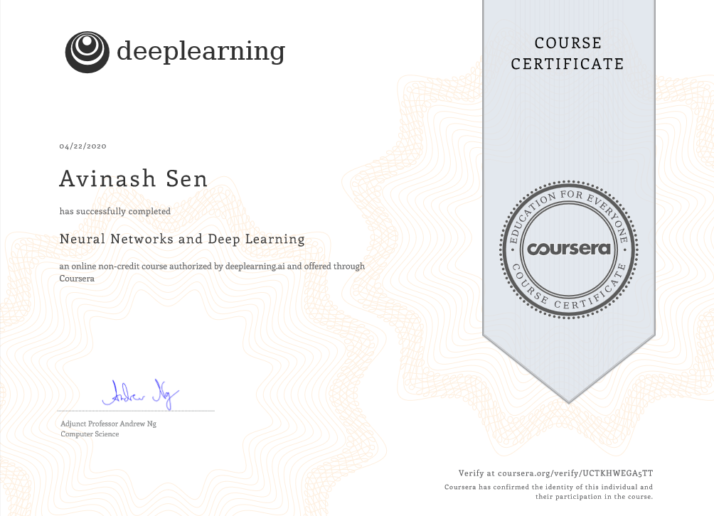
2. Improving Deep Neural Networks: Hyperparameter tuning, Regularization and Optimization :
This is the second course of the Deep Learning Specialization. I understood what drives performance in the deep learning process, and abled to more systematically get good results. Understood industry best-practices for building deep learning applications. - abled to effectively use the common neural network "tricks", including initialization, L2 and dropout regularization, Batch normalization, gradient checking, - abled to implement and apply a variety of optimization algorithms, such as mini-batch gradient descent, Momentum, RMSprop and Adam, and check for their convergence. - Understood new best-practices for the deep learning era of how to set up train/dev/test sets and analyze bias/variance - abled to implement a neural network in TensorFlow.
3. Structuring Machine Learning Projects :
This is the third course in the Deep Learning Specialization. you will: - Understood how to diagnose errors in a machine learning system. - abled to prioritize the most promising directions for reducing error - Understood complex ML settings, such as mismatched training/test sets, and comparing to and/or surpassing human-level performance. - Studied how to apply end-to-end learning, transfer learning, and multi-task learning. This is a standalone course, and we can take this so long as you have basic machine learning knowledge.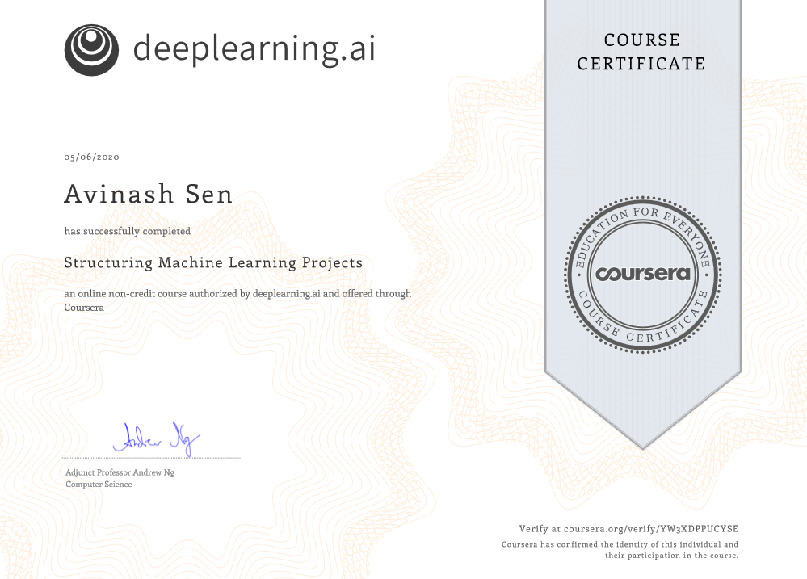
4. Convolutional Neural Networks :
This is the fourth course of the Deep Learning Specialization.-This course will taught me how to build convolutional neural networks and apply it to image data. - Understood how to build a convolutional neural network, including recent variations such as residual networks. - Knew how to apply convolutional networks to visual detection and recognition tasks. - Knew to use neural style transfer to generate art. - abled to apply these algorithms to a variety of image, video, and other 2D or 3D data.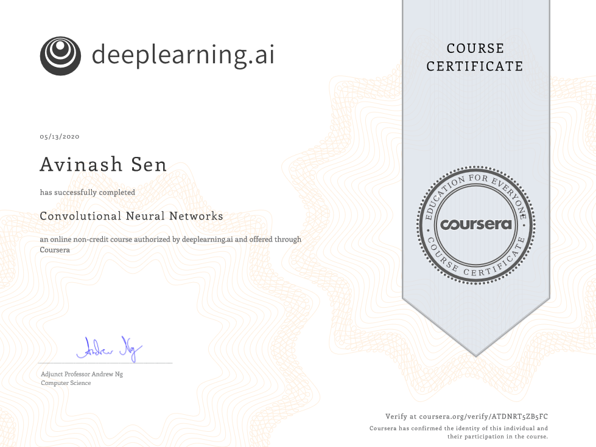
5. Sequence Models :
This is the fifth and last course of the Deep Learning Specialization. This course will teach you how to build models for natural language, audio, and other sequence data. - Understood how to build and train Recurrent Neural Networks (RNNs), and commonly-used variants such as GRUs and LSTMs. - abled to apply sequence models to natural language problems, including text synthesis. - abled to apply sequence models to audio applications, including speech recognition and music synthesis. This is the fifth and final course of the Deep Learning Specialization.Specialisation Certificate
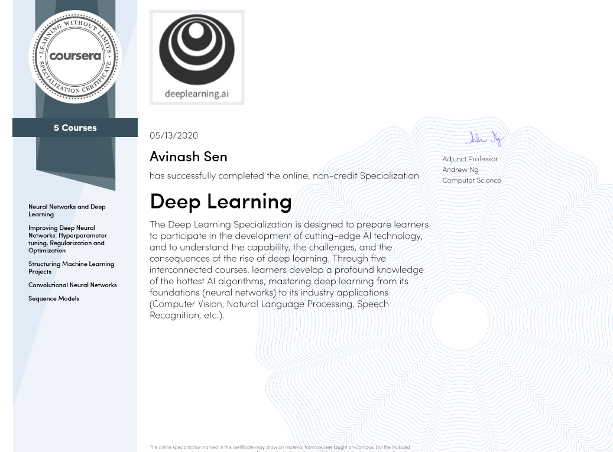
II. TensorFlow in Practice
This Specialization taught me best practices for using TensorFlow, a popular open-source framework for machine learning.
1. Introduction to TensorFlow for Artificial Intelligence, Machine Learning, and Deep Learning :
This First course helps to use TensorFlow to implement those principles so that we can start building and applying scalable models to real-world problems.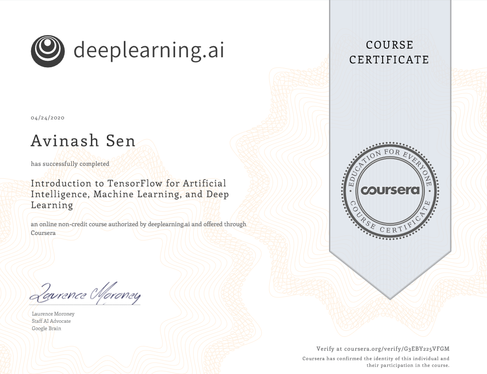
2. Convolutional Neural Networks in TensorFlow :
This second course teached me advanced techniques to improve the computer vision model you built in Course 1. This will explore how to work with real-world images in different shapes and sizes, visualize the journey of an image through convolutions to understand how a computer “sees” information, plot loss and accuracy, and explore strategies to prevent overfitting, including augmentation and dropouts. Finally, taught the transfer learning and how learned features can be extracted from models.
3. Natural Language Processing in TensorFlow :
In this third course, I learned how to apply neural networks to solve natural language processing problems using TensorFlow. we’ll learn how to process and represent text through tokenization so that it’s recognizable by a neural network. Then introduced to new types of neural networks, including RNNs, GRUs and LSTMs, and how we can train them to understand the meaning of text. Finally, l learned how to train LSTMs on existing text to create original context.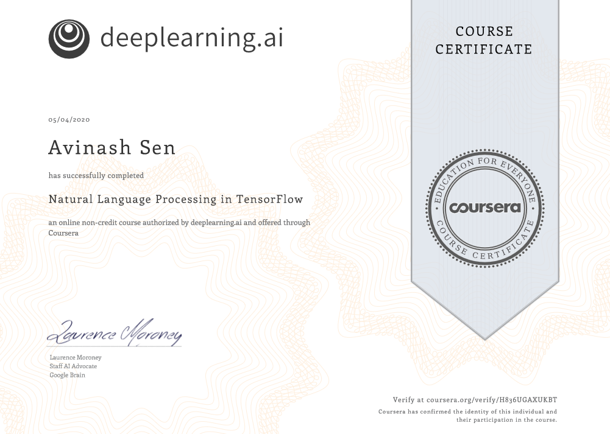
4. Sequences, Time Series and Prediction :
In this fourth course, i learned how to build time series models in TensorFlow. Firstly, implemented best practices to prepare time series data. After that studied how RNNs and 1D ConvNets can be used for prediction.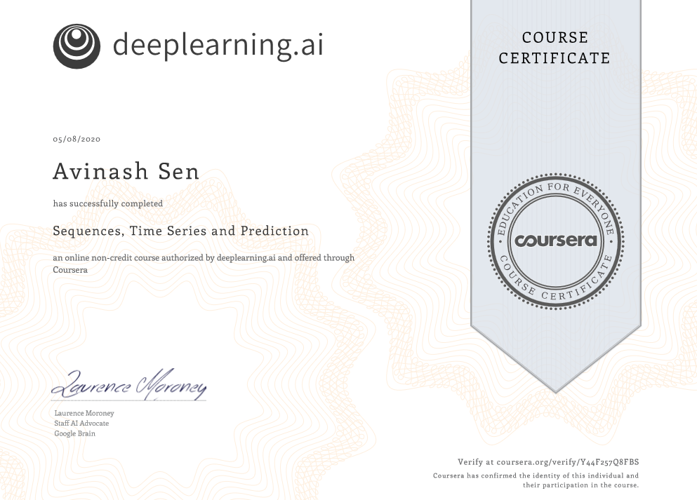
Specialisation Certificate
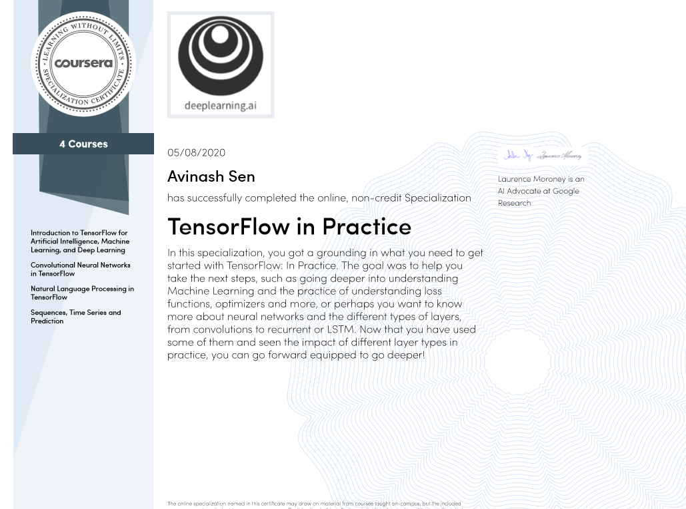
III. TensorFlow: Data and Deployment
Bringing a machine learning model into the real world involves a lot more than just modeling. This Specialization taught me how to navigate various deployment scenarios and use data more effectively to train your model.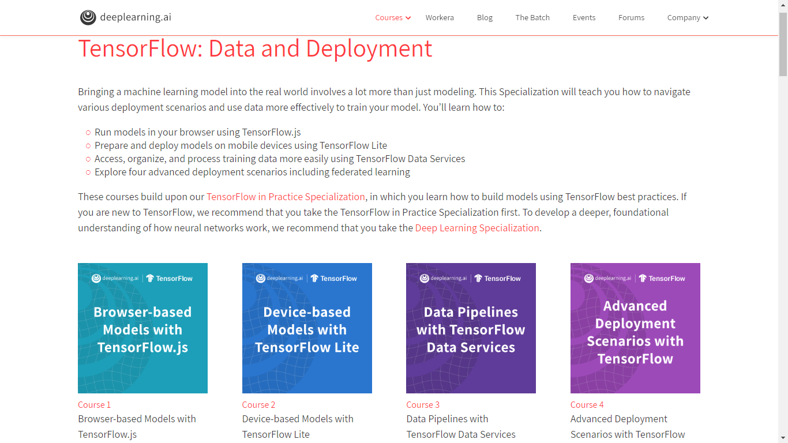
1. Browser-based Models with TensorFlow.js
This first course showed me how you can train and run machine learning models in any browser using TensorFlow.js. l learned techniques for handling data in the browser, and at the end you’ll build a computer vision project that recognizes and classifies objects from a webcam.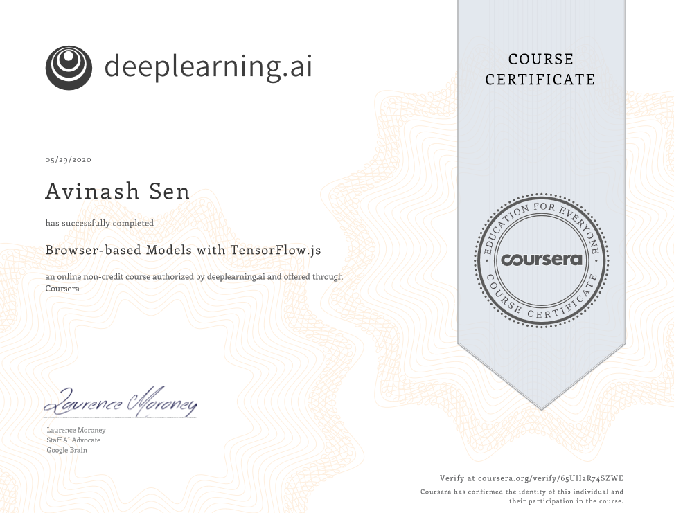
2. Device-based Models with TensorFlow Lite
This second course teaches you how to run your machine learning models in mobile applications. l learned how to prepare models for a lower-powered, battery-operated devices, then execute models on both Android and iOS platforms. Finally, l explored how to deploy on embedded systems using TensorFlow on Raspberry Pi and microcontrollers.
3. Data Pipelines with TensorFlow Data Services
In this third course, l used a suite of tools in TensorFlow to more effectively leverage data and train your model. l learned how to leverage built-in datasets with just a few lines of code, used APIs to control how to split the data, and process all types of unstructured data.
4. Advanced Deployment Scenarios with TensorFlow
In this final course, l explored four different scenarios encounter when deploying models. l been introduced to TensorFlow Serving, a technology that lets you do inference over the web. l moved on to TensorFlow Hub, a repository of models that i can use for transfer learning. Then l used TensorBoard to evaluate and understand how my models work, as well as share mine model metadata with others. Finally, l explored federated learning and how i can retrain deployed models with user data while maintaining data privacy.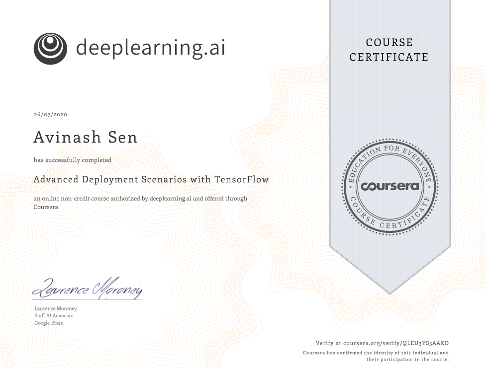
Specialisation Certificate
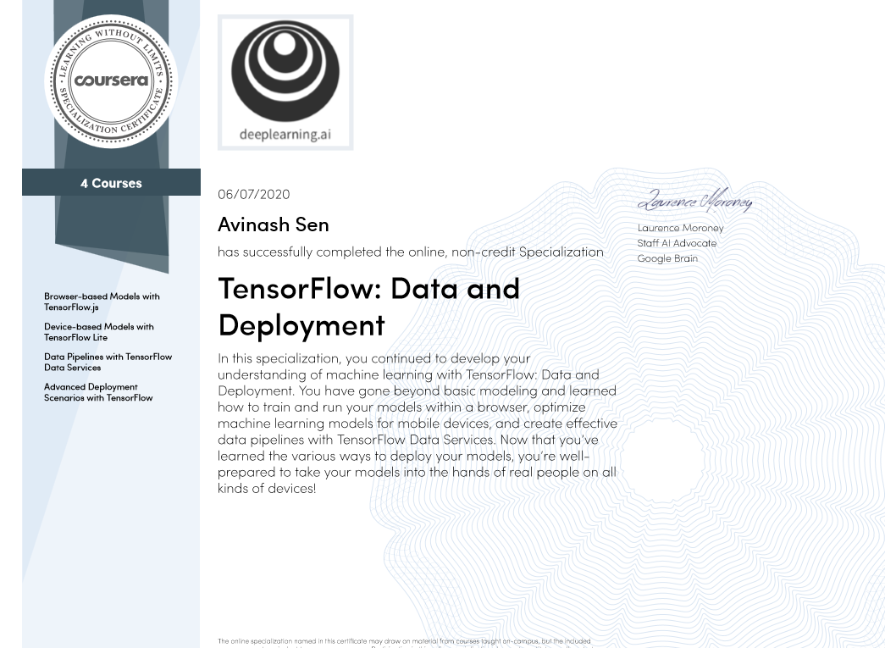